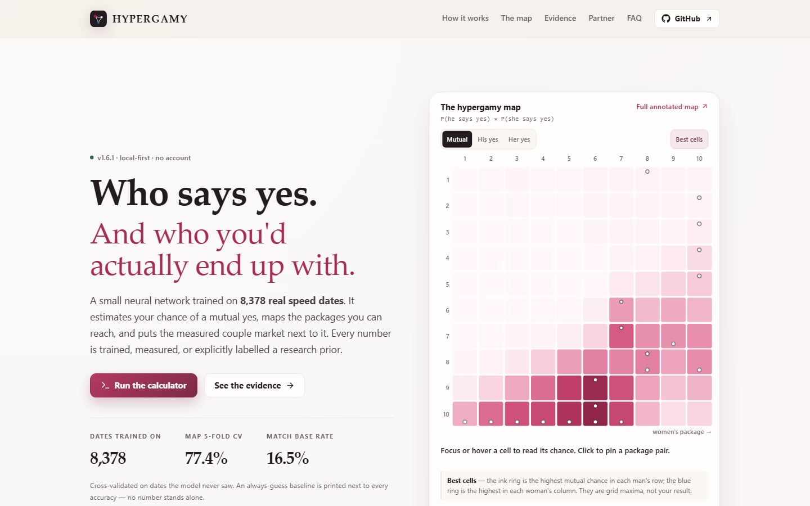
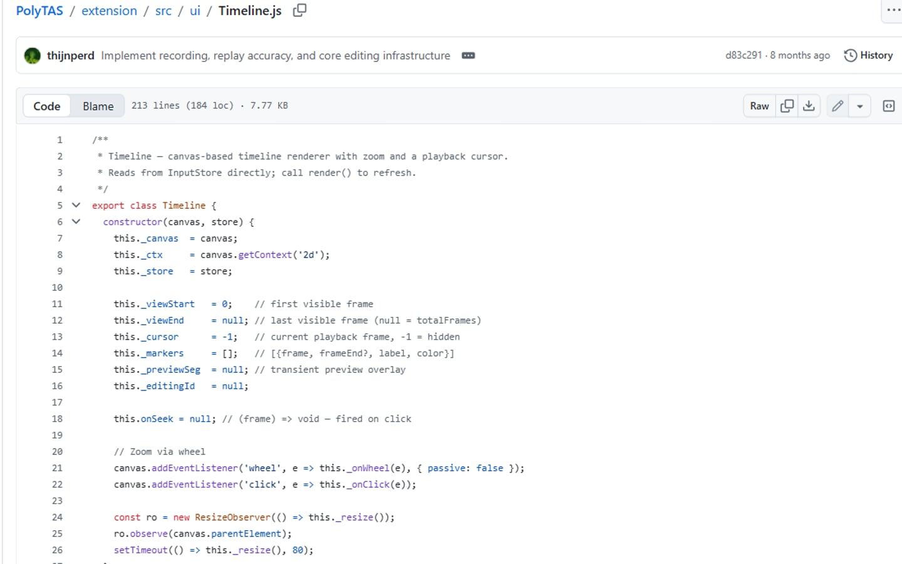

Thijn Köhne.
Local-first software, procedural graphics, and interfaces that hold up. Built with AI in the loop and reviewed line by line.
Drag the dial to change the light
A developer who treats AI like a studio partner.
I build software the way I like to think: fast, tactile, and slightly obsessive about the details nobody asked for. Most of it starts as a prompt and ends as something you can click. I read every diff and ship what survives.
That means local-first tools that respect your files, WebGL that behaves like print, and interfaces with a point of view. The current obsessions: dithered graphics, note graphs you can reason with, and agents that do the boring part properly.
- Discipline
- Software, interfaces, AI co-creation
- Stack
- TypeScript · Python · Rust · GLSL
- Shipping
- Cortex · Dither Studio · PapersPlease
- Process
- AI-assisted, human-directed
- Mode
- Daylight, ideating
Five repositories, all shipped.
From GitHub: three run in your browser, two are code you can read.

Dither Studio
An offline dithering press for images and video: 47 algorithms, 30 ink sets and a 25-effect stack in a zero-dependency app that never uploads your files.
The image never leaves the tab: files load, process and export locally.
thijnperd.github.io/dither-studio
Cortex
A local-first thinking space that turns a folder of Markdown into six ways of seeing it (graph, brain, timeline, atlas, bento, decisions) and keeps the reasoning behind every choice.
Your Markdown folder is the database; every change stays on disk.
thijnperd.github.io/obsidian-cortex
PapersPlease
A literature crawler built for AI agents. It searches five sources, reads every candidate, screens each paper for genuine relevance, and only then hands over open-access links.
One pipeline behind a CLI, a TUI, a Python library and an MCP server, with zero runtime dependencies.
github.com/thijnperd/Sci-crawler
HYPERGAMY
A neural network trained on 8,378 real speed dates, drawn as a 10×10 map. Every number is measured or explicitly labelled as a prior.
An always-guess baseline is printed next to every accuracy figure.
thijnperd.github.io/h-AI-pergamy
PolyTAS
A tool-assisted speedrun editor for PolyTrack: per-frame input editing, live recording from the game tab, JSON import and export, and replay scripts generated from a compressed frame timeline.
Ships as an unpacked MV3 extension, with runs stored as local JSON files.
github.com/thijnperd/PolyTASThe tools behind the projects above.
Every item on this list has shipped in one of those repositories.
Languages
- JavaScript & TypeScript
- Python
- Rust
- HTML & CSS
- GLSL
Graphics
- Three.js / WebGL2
- Custom shaders
- Canvas 2D
- Procedural modelling
- Ordered dithering
Systems
- Node & Vite
- Chrome extensions (MV3)
- MCP servers
- CLI & TUI tools
- Local-first architecture
Practice
- AI co-creation
- Interface design
- Performance budgets
- Honest data
- Shipping in public
Hand-written CSS, one Three.js scene, no client framework. The page you are reading is part of the portfolio rather than a template behind it.
Got something
worth building?
I'm usually somewhere in a terminal. The fastest way in is GitHub: issues, ideas, or a genuinely good bug.
github.com/thijnperd